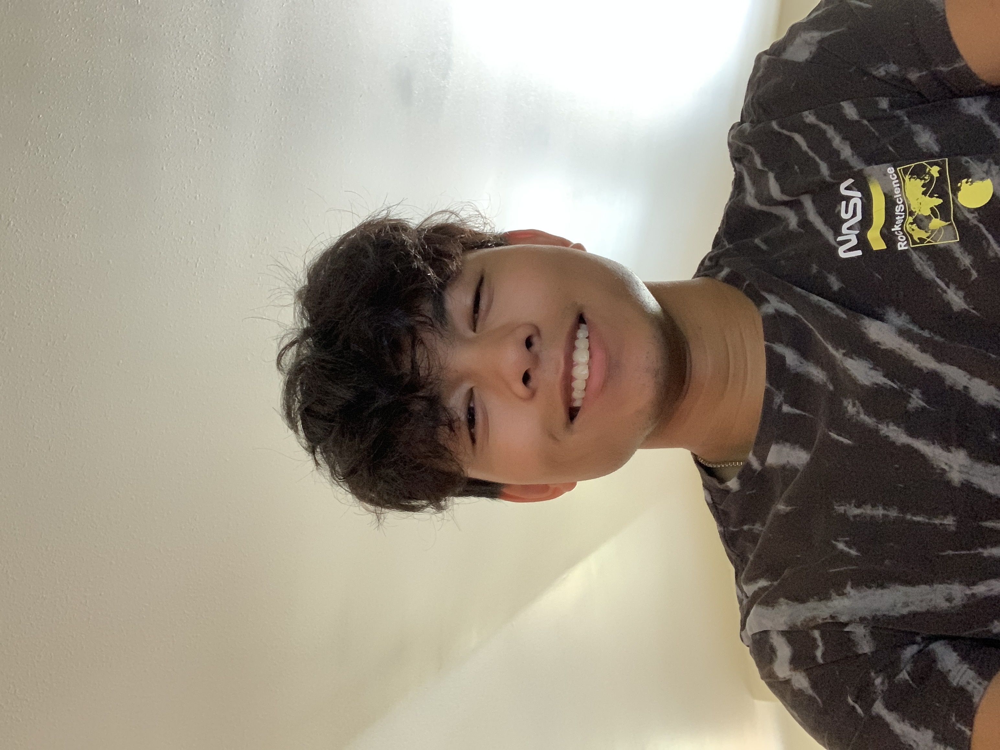

Alex Magallano

Summary
Currently a college student who is hardworking and determined and has experience with customer service
Education
- High School Graduate - Mount Baker Senior High (2022)
- Heading into 2nd year of college - Western Washington University (2022 - Present)
Work Experience
Washington Chestnut Company - Farmhand
August 2019 - Septemmber 2019
- Maintained chestnut trees by pruning, fertlizing, and cleaning farm area.
Black Mountain Ranch - Maintenance
March 2020 - April 2020
- Maintaned golf course and resort grounds.
- Kept resort grounds clean.
Brambleberry - Fulfillment Worker
April 2021 - October 2021
- Gathered various products for orders.
- Prepared orders to be shipped to customers.
U-Haul - Customer Representative
July 2022 - August 2022
- Checked-in rentals and prepared rentals for new customers.
- Made sure rentals had proper tire pressure, windshield fluid, full oil, cleaned, and prepped.
- Conducted safety inspections on rentals when possible.
Costco - Food Court
August 2022 - September 2022
- Served and prepared food for Costco members.
- Made sure condiments, utensils, and napkins were fully stocked for members.
- Made sure products and ingredients were fully stocked throughout the day.
Skills
- Customer Service: ⭐️⭐️⭐️⭐️
- Communication:⭐️⭐️⭐️⭐️
- Web Development:⭐️⭐️
Other